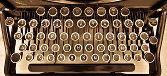
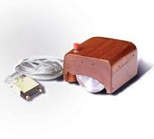

Le periferiche di input
Come già detto in precedenza, la tastiera è una periferica di input perché permette di inserire
dati nel computer grazie ai suoi tasti che si dividono in: le 26 lettere dell’alfabeto (dalla A alla Z), le
10 cifre decimali (da 0 a 9) e altri caratteri speciali come: Backspace, ESC, tasti F1-F12, CANC, tasti
freccia e molti altri. La prima tastiera fu inventata nel 1873 la quale usava il sistema QWERTY che si usa
ancora oggi (anche se per motivi diversi), infatti si creò questo metodo così da allontanare delle lettere
che potessero andare una dopo l’altra così da evitare che la macchina si inceppasse, invece oggi si usa
ancora perché ormai molte persone erano abituate a quel sistema e quindi cambiarlo sarebbe stato un
problema.

Un’altra periferica di input è il mouse perché essendo un dispositivo di puntamento anche lui
ci permette di inserire dati nel computer di solito ha almeno un tasto e una rotella (usata per lo
scorrimento dei contenuti), il mouse può essere collegato al computer via cavo o via Bluetooth.
Il primo mouse fu inventato nel 1963 dall'ingegnere americano Douglas Engelbart ed era fatto di legno, aveva
due dischi metallici che andavano solo in orizzontale in verticale e un pulsante, costava intorno ai 300
dollari (600 euro odierni) e per imparare a usarlo ci volevano mesi. Poco dopo, alcuni ingegneri della Apple
che avevano lavorato alla Xerox Parc presentarono il mouse a Steve Jobs, il fondatore della Apple. Jobs capì
la vera portata di questo nuovo strumento e decise di farlo riprogettare seguendo precise indicazioni:
costo contenuto (massimo 15 dollari) e piccole dimensioni rispetto ai suoi ingombranti predecessori.
